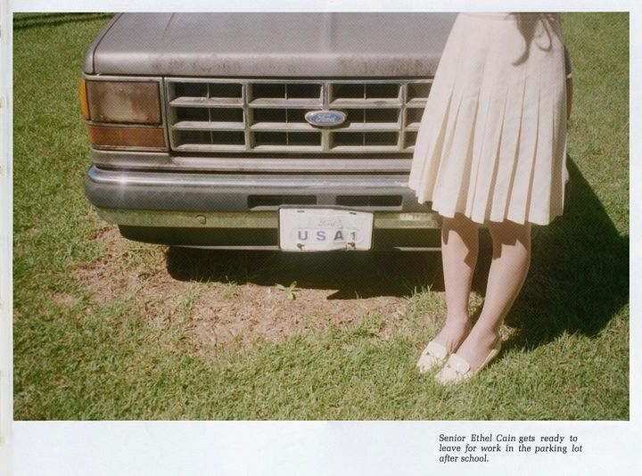
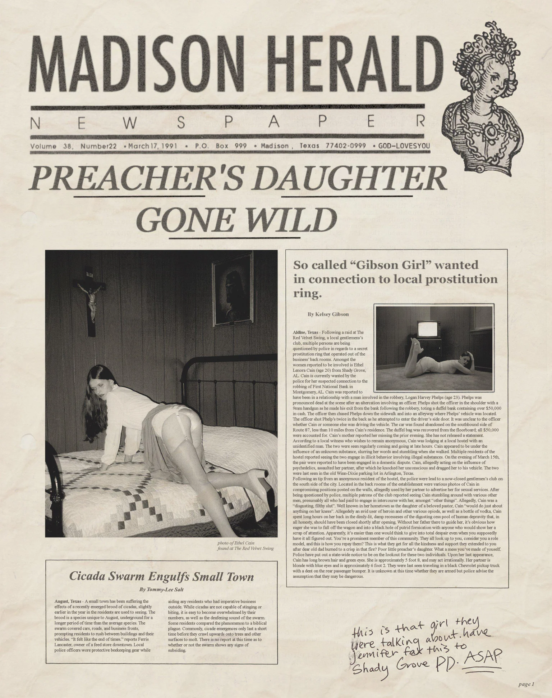
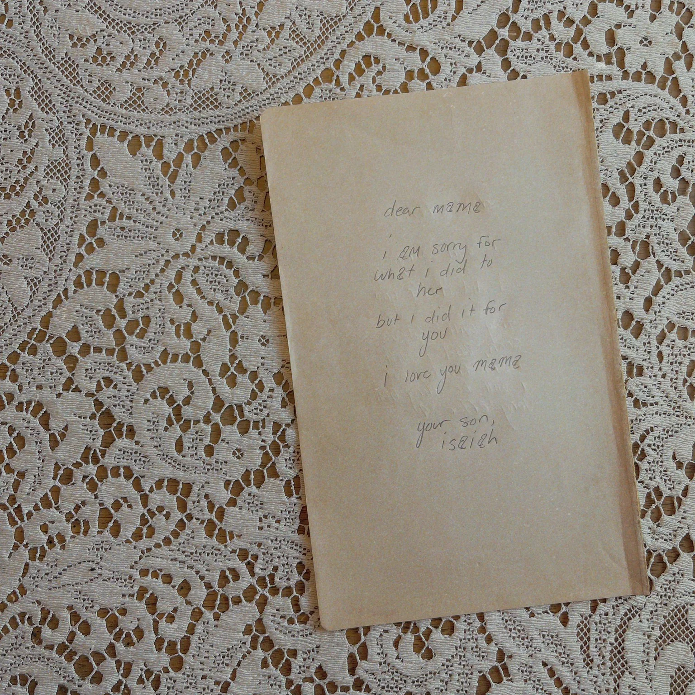
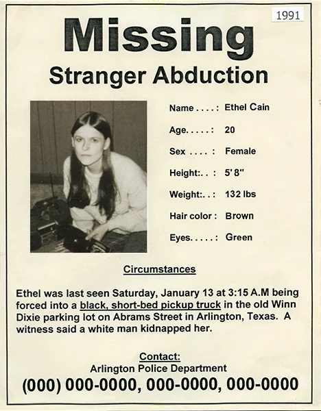
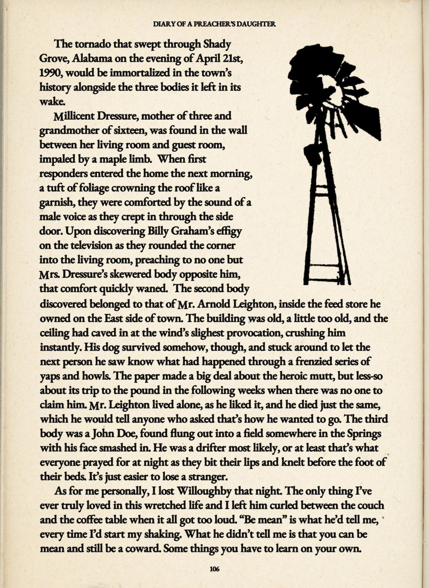

Hi hi hello!! This is my shrine to my favourite artist ever!! I've been a fan of hers since 2024,
and i adore her art very much
Hayden Silas Anhedönia, also referred as Ethel Cain, is an American singer-songwriter and record
producer. She was born on March 24, 1998 in Tallahassee, Florida, then raised in Perry, Florida. She
was the eldest child of a Southern Baptist family, her father a truck driver and deacon, her mother
a part-time clerk who sang in the church choir. Choir was the first entry way into music for Hayden.
At 16 she left the church, after being ostracized for being gay at age 12. She was raised in a
very conservative household, was not permitted to go online, listen to non-Christian music,
or pick out her own clothes. However during this time she would browse Tumblr. "Suddenly there was a
whole new world of people who were queer, people who weren't die-hard Republicans" (Ethel Cain). At
age 18 she moved out and started making music. Identified as non-binary, but really felt like she
was a transwoman. "I was too scared to come out as a trans woman 'cause I was dreading the thought
of having to come out for a second time after how it went the first time." (Ethel Cain) In 2017, she
shaved her head and promised she would turn back into a man to try and please her family, but all
that brought was a long period of misery. But once she turned 20, she publicly came out as a
transwoman, and on November 9, 2018 she started to medically transition into a woman. Her parents
are now more supportive of her identity, in fact her mother is very supportive of both her and her
artwork. "She thinks she was just trying to parent me the way that she best saw fit, but for me, it
was like I was being tortured." (Ethel Cain)
" I'm autistic, and so that definitely heightens sensory everything. [...] I think that's why I
have so much crossover between media, because it's like, there's never just one sense. Music is
not just something you listen to. Film is not just something you watch. You get all these senses
from all these things. When I'm producing music, I literally feel sometimes I can see it. I have
to close my eyes, and I imagine the bass is the earth. I imagine the synths are rising up next
to you, and I imagine the vocals are high in the sky, right in the center. I close my eyes and
picture the sound around me – that's how I mix. "
She first started under the names Atlas and White Silas. Her first "album" was unreleased and
recorded in 2013. Then in 2016 she recorded the track "The Altar", then released the album Colossus
under the name Atlas. But was quickly unreleased when she changed to the alias "White Silas". Then
from 2019, she started using the name Ethel Cain, where she is most well known as. Other aliases
such as "Tommy", "Miss Anhedönia", and "Ashmedaiii", were used to release demos but have now been
deleted.
August 2, 2019, Hayden released her debut EP Carpet Bed. Later, December 1, 2019, Golden Age was released. January 18, 2020 "A Portrait of My Love on Her Knees" was released. In 2020, Unreleased and Unreleased II were released on Bandcamp, while she started recording her third EP. Michelle Pfeiffer was released on February 11, 2021, as a lead single for Inbred, next were Crush and Unpunishable. The Inbred EP was released on April 23, 2021, and on the analog formats 4 bonus tracks were added: Crying During Sex, Earnhardt, Age of Delilah, and Michelle Pfeiffer (Solo Version)
Since 2018, Hayden has been working on her debut record. On March 8, 2022, she released a cover of the song "Everytime" by Britney Spears in honor of International Women's Day. On March 17, 2022, Hayden released the single "Gibson Girl", and announced her debut studio album. On May 12, 2022, the concept album Preacher's Daughter was released. July 21, 2023, she released "Famous Last Words (An Ode to Eaters)".
2022, Anhedonia started working on the prequel to Preacher's Daughter, Willoughby Tucker I'll Always
Love You. Summer of 2024, Anhedonia released limited edition pop-up merchandise in New York City,
including posters with the title Perverts. During this time she performed the tracks "Punish", and
"Amber Waves" live on The Childish Behavior Tour. In July, she confirmed that her next project would
not be related to the Ethel Cain story line. October 14, 2024, Hayden's fourth EP was officially
announced on her Instagram. Punish was released on November 1, 2024, then January 8, 2025, Perverts
was released.
On March 23, WTIWALY was officially announced, which its lead single "Nettles", was announced on May
28th, and released on June 4th with a visualizer. A second single "Fuck Me Eyes" was released on
July 2nd. July 7th, 2025, the album's official tracklist was revealed on Instagram, then on August
8th, 2025, the full album was released.
Summer of 2019, Anhedonia began recording her second EP, with the themes of the Florida heat and her own experiences with her first real love that she faced in 2019, that ended up leaving her hurt in the process by not knowing how to deal with it. This EP was inspired by Michelle Tumes, Nichole Nordeman, Jaci Velasquez, Nicole Dollanganger, Velvetears, and Title Fight. November 26, 2019, Canadian label Homie Shit Magazine confirmed that they would be distributing Golden Age on December 1, 2019. Golden Age was physically released as limited editions of both CD and cassette, with the physical edition containing alternative artwork as well as 2 bonus tracks "Selby Wall", "Child of Cain", and the demo of "Sunday Morning".
| No. | Title | Writers | Rating | Length |
|---|---|---|---|---|
| 1. |
"
Sunday Morning " |
Anhedōnia | 10/10 | 4:39 |
| 2. |
"
Casings " |
Anhedōnia | 7/10 | 4:36 |
| 3. |
"
Lillies " (ft. Mercy Necromancy) |
Anhedōnia, Mercy Necromancy | 10/10 | 5:04 |
| 4. |
"
Head in the Wall " |
Anhedōnia | 8.5/10 | 6:41 |
| 5. |
"
Knuckle Velvet " (ft. YAH WAY) |
Anhedōnia | 10/10 | 3:22 |
| 6. |
"
Golden Age " |
Anhedōnia | 7/10 | 6:04 |
| Total length: | 30:27 | |||
After releasing Golden Age, Anhedonia felt like she was forced into the "sad girl" archetype. To leave that, Inbred was made from her anger rather than sadness. At first Inbred had a more '80s inspired synthpop sound, but from the COVID pandemic, Hayden redid the concept, and described it as an EP rooted in misery and suffering. On January 8, 2021, Anhedonia announced "Michelle Pfeiffer", featuring Lil Aaron, as the lead single from Inbred. Following that, she gave 2 press interviews to promote the track and the EP. From the increased promotional support through her partnerships, this EP had a wider reach than the previous 2 EPs. "Michelle Pfeiffer" itself was featured on Billboard, The Fader, Nylon, and Pitchfork. "Crush" was announced as the second single on March 15, 2021, with a promotional still from the visualizer. The song was dropped 3 days after the announcement and became one of Hayden's most popular tracks. On April 12, 2021, "Unpunishable" was released as the final single to Inbred. Then on April 23, the full EP was released, and on that same day, Anhedonia's self-made label, Daughters of Cain, launched the limited physical editions of Inbred, which included 3 bonus tracks: "Crying During Sex", "Earnhardt", a demo of "Age of Delilah", and a solo version of "Michelle Pfeiffer".
| No. | Title | Writers | Rating | Length |
|---|---|---|---|---|
| 1. |
"
Michelle Pfeiffer "(ft. Lil Aaron) |
Anhedōnia, Aaron Puckett, Kora Puckett | 11/10 | 4:31 |
| 2. |
"
Crush " |
Anhedōnia | 10/10 | 3:24 |
| 3. |
"
God's Country "(ft. Wicca Phase Springs Eternal) |
Anhedōnia, Adam McIlwee | 7/10 | 8:15 |
| 4. |
"
Unpunishable " |
Anhedōnia | 10/10 | 4:21 |
| 5. |
"
Inbred " |
Anhedōnia | 11/10 | 4:47 |
| 6. |
"
Two-Headed Mother " |
Anhedōnia | 11/10 | 6:12 |
| 7. |
"
Crying During Sex " |
Anhedōnia | 20/10 | 5:28 |
| Total length: | 36:58 | |||
Most of Preacher's Daughter was written in Florida, before she relocated to Indiana in the summer of 2020. Several versions were scrapped, around 5–6 times. In 2021, in a promotional interview for Inbred, she stated that the record was nearly complete; this version had a runtime of 2 and a half hours. In a Tumblr post from late 2021, Anhedonia confirmed that there was only a few months of production left. On January 9th, 2022 she said the album was finished. However on January 19th, 2022, her team shared on Twitter that she was still adding additional details. This album was finished in March 2022. By the end, Hayden didn't feel like Ethel anymore but more so as if "she's dead and gone and I'm just telling her story now." Preacher's Daughter was released on May 12th, 2022, and played 2 album release shows in New York and Los Angeles the same month. It was toured through The Freezer Bride Tour in 2022, and later through the Blood Stained Blonde Tour in 2023.
This album is the first in a trilogy about Ethel Cain and her family tree, and it talks about
intergenerational trauma, religious trauma and living in America. The record is set in 1991, a
decade after the death of Ethel's father, the town's preacher.
The first song sets up Ethel Cain's life, explaining her experience with being the town's preacher's daughter and religion. She feels trapped and unable to escape her family; even after her father's death, she will always be known as his daughter.
Ethel lives in Shady Grove, a small Southern Baptist town in Alabama. Since birth, she is taught to put her life into Christianity and God, being told her life is for the Church and Jesus Christ.

However, despite having grown up surrounded by these ideologies constantly, she can't help but feel like everything was fake and made up. She sees her neighbor coming back from war in a box, and wonders what the American dream really is. She's dirt poor, and it seems like the only way out is blocked. With all this on her mind, she is still made to lead her town's congregation every Sunday in attempts to preserve his legacy. Unable to cope, she turns to whiskey in hopes that it'll drown out the pain.Mourning the loss of her ex-boyfriend, she thinks about the times they were together. "Everybody but his mama just calls him 'Will', though, as in 'will do just about anything'. They were right; I can't remember a time when that boy wasn't getting his ass chewed out by his daddy but I was sweet on him for it. I've been sweet to him, long as I can remember." (Ethel Cain) Ethel and Willoughby (her ex-boyfriend) both grew up in very dysfunctional families, and to escape it they would walk to a house at the edge of town and just feel each other's presence in silence. His mama calls her to check up, knowing that she's mourning the loss, but she can't help but lie to her. She misses him and would do anything to get him back, but she knows he will never come back since she is the reason he left town/died (unconfirmed). She cries every day, tries to drink it away, but it makes everything worse. He was the only one she trusted, her knight in shining armor, the hope that they could make it out.
Later, Ethel falls in love with another man, Logan Phelps. Just like with Willoughby, she was hopelessly devoted to him. He uses her for sex and sex only, but Ethel wants to believe he's doing this out of love. She can't express what she wants and needs in relationships, so to cope, she lets him. Not only that, but he physically abuses her too. He takes her on robberies across the state and basically forces her to be his partner in crime. She would do anything if he asked, but if he really loved her would he make her do all those things? He's the only thing she has left, and she would rather die than leave him.
During a bank heist, Logan was killed in a gunfight, and Ethel is forced to flee from the police. Becoming a wife and having sex is in traditional Southern culture often what marks womanhood; this corresponds to the chorus where he "wash[es] all over her" after they get married at the chapel. The rest of the song describes the intergenerational trauma that runs through her family, and how all her experiences shaped her.
The song concludes Act One of the album and speaks on the sexual trauma she endured from her father
from age 9. From the abuse, she felt like she had to grow up too fast and never had the chance to
properly do so. A part of Ethel wants to see her father as the godly reverend he was in public, and
wishes he had been a good father. She hates her fate and feels it isn't fair that she got no justice
while everybody remembers him as a saint rather than a monster. Ethel feels as if her father tainted
her soul, and she's now poisonous. She never wanted this; she just wanted a healthy relationship
with her father. On her birthday, her father Joseph was watching her in the corner lustfully. But
she was "too young to notice that some types of love could be bad."
In the outro it repeats:
"I'm tired of you, still tied to me (Bleeding whenever you want)
I'm tired of you, too tired to leave (I just wanna sleep)
I'm tired of you, still tied to me (I just wanna sleep)
Too tired to move, too tired to leave (I just wanna sleep)
I'm tired of you, still tied to me (Please, can I sleep, can I sleep?)"
CSA can result in trauma to the genital area, such as unexplained bleeding, bruising, or blood on
the sheets, underwear, or other clothing. Ethel's father would come to her during the night, not
letting her sleep and making her bleed.
Running away from the cops, Ethel starts to wander on the thoroughfare, then she meets Isaiah, who offers her a ride. She was last seen in Arlington, Texas. Isaiah met Ethel "somewhere" in Texas and hasn't been seen since. They go on a road trip from Texas to California to find love. However, as they spend more time together, they fall in love, and Ethel genuinely believes that Isaiah is the one, and not like the other men who have abused her relentlessly. At the end they're at the edge of California, camping out and singing together.

This song is inspired by The Gibson Girl, a feminine character created by Charles Dana Gibson in the late 19th and early 20th century United States as a personification of the "ideal feminine body." After Ethel and Isaiah arrive in California, he starts to pimp her out at the back of the club and feed her drugs on the regular. He's gaslighting her, saying "Baby, if it feels good, then it can't be bad," and by doing sex work she's rebelling against the values she was trying so hard to escape. She has no choice but to comply, since she's high and gone all the time.Ptolemaea, named after Ptolemy, is a circle of Hell in which the traitorous reside. At night, Isaiah buckles her down to the floor to keep her from escaping. Since Ethel was raised in a very strict Christian upbringing, she's pure and naive in Isaiah's eyes — and because of this, he wants to destroy her. As the song progresses to the first verse, you hear Isaiah's footsteps up the stairs to the attic; she knows her fate and knows that she cannot hide from it. Ethel starts to forget where

she is, thinking that her dad's gone and her mom won't come home, and that's why nobody has come to save her. You poor thing, / Sweet, mourning lamb, / There's nothing you can do, / It's already been done." He's made up his mind and won't change it. As he's taunting her, she begs him to stop, trying to make sense of what is happening. Halfway into this verse, she realizes he has come to kill her, and starts to repeat "stop." The final stop is a
blood-curdling scream as Isaiah kills her. After the scream it repeats "I am the face of love's rage," and during this, in the background you can hear Ethel plead with Isaiah, repeating "no," "please," "stop" before ending with a final scream. This leads me to believe that Isaiah didn't use a gun but instead used a knife or axe, stabbing her multiple times before she finally dies. The end of the song is a prayer twisted from the Bible, Matthew 5:3–12, and at the very end you can hear a croak of some sort, which is probably Ethel.
Both are instrumentals about Ethel's death. August Underground is about the physical decomposition
of Ethel, and is named after a pseudo-snuff film. At the end you hear the attic door slam (echoed),
enclosing Ethel forever.
On the other hand, Televangelism is the freedom of her soul — it's hopeful, and is her soul going
back to heaven. You hear some sort of vocals in the back that kind of sounds like what I would think
an angel would sound like. Both instrumentals are supposed to play at the same time.
In heaven, she makes peace with her death and reflects on her life. Even though she hated church, it
was the only place that truly provided comfort and safety.
God loves you, but not enough to save you. So, baby girl, good luck taking care of yourself.
Ethel's instinct in the face of danger is to fight back, taught by her father, but she realizes that
doing so would only repeat the cycle of abuse and come back to bite her harder. Going back would
mean being shamed and shunned, so she would rather stay in heaven. She's always lived her life
watching it pass her by, wanting to make it out. Her courage was taught by her father, but she knew
her fate was doomed from the start, and the only way forward is to let go and heal.
Singing if it's meant to be then it will be, I forgive it as it comes back to me
In the outro she says "I'm still praying for that house in Nebraska, by the highway, out at the edge
of town." Even after death, she still loves Willoughby and wishes none of this had happened.
After looking over her life, she looks towards her brutal end. After Isaiah murdered her, he put Ethel in the freezer. He walks towards her body, and despite what he did to her, she is still in love with him. While with him, she tried to be good, then questions whether she was good enough, wondering if he was always plotting to murder her, or if she was the problem. Nobody can find her; she's become a cold case since the only evidence left of her is a polaroid. Her mother constantly mourns, hoping that Ethel is still alive, but has no way of knowing. The only way is to hope and cry. Back in California, Isaiah starts to cannibalize Ethel. In earlier verses she says "Freezer bride, your sweet divine, / You devour like smoked bovine hide, / How funny, I never considered myself tough" and "If I'm turning in your stomach and I'm making you feel sick," foreshadowing what Isaiah does to her. All she ever wanted was to be truly loved — something she never felt, not even with Willoughby. So she asks Isaiah, if she's making him feel sick, physically and mentally. "Found you just to tell you that I made it real far, / And that I never blamed you for loving me the way that you did, [...] Don't think about it too hard, or you'll never sleep a wink at night again." She knows that Isaiah is going insane from the guilt of murdering and eating her. Out of insanity and hunger he resorted to the only meat he had in the cabin — Ethel's flesh. The last lines of the song are to her mother, reassuring her that she always loved her, and that she will be waiting once her mother passes.
| No. | Title | Writers | Rating | Length |
|---|---|---|---|---|
| 1. |
"
Family Tree (Intro) " |
Anhedōnia | 9/10 | 3:41 |
| 2. |
"
American Teenager " |
Anhedōnia | 10/10 | 4:18 |
| 3. |
"
A House in Nebraska " |
Anhedōnia | 11/10 | 7:46 |
| 4. |
"
Western Nights " |
Anhedōnia | 7.5/10 | 6:05 |
| 5. |
"
Family Tree " |
Anhedōnia | 10/10 | 7:11 |
| 6. |
"
Hard Times " |
Anhedōnia | 10/10 | 5:03 |
| 7. |
"
Thoroughfare " |
Anhedōnia | 9.8/10 | 9:28 |
| 8. |
"
Gibson Girl " |
Anhedōnia | 10/10 | 5:42 |
| 9. |
"
Ptolemaea " |
Anhedōnia | 10/10 | 6:24 |
| 10. |
"
August Underground " |
Anhedōnia | 8/10 | 3:40 |
| 11. |
"
Televangelism " |
Anhedōnia | 11/10 | 3:03 |
| 12. |
"
Sun Bleached Flies " |
Anhedōnia | 10/10 | 7:36 |
| 13. |
"
Strangers " |
Anhedōnia | 11/10 | 5:44 |
| Total length: | 75:42 | |||
Prior to the conception of Perverts, Hayden had already expressed that she wanted to make an ambient project. In 2020, she tweeted that she was sampling audio for a project. Between 2021 and 2023 she released music on SoundCloud under the alias אשמדאי, which included the tracks "Houseofpsychoticwomn" and "Matriarch1", then being reworked later for the Perverts EP. Later, under this alias, she posted a compilation titled 000000000, which had many demos/outtakes for the EP. Inspiration for this project was a visit to Bruce Mansfield Power Plant and the track "Willoughby's Themes." The EP was originally titled Childish Behavior, and was meant to be studies on different kinds of perverts. The final title, Perverts, was chosen to provoke people, and built the project around the shame she experienced in adolescence as projected onto her by others, but also about inward reflection and personal experience. It was officially released on January 10th, 2025.
| No. | Title | Writers | Rating | Length |
|---|---|---|---|---|
| 1. |
"
Perverts " |
Anhedōnia | 4/10 | 12:04 |
| 2. |
"
Punish " |
Anhedōnia | 7/10 | 6:40 |
| 3. |
"
Housofpsychoticwomn " |
Anhedōnia | 8/10 | 13:35 |
| 4. |
"
Vacillator " |
Anhedōnia | 10/10 | 7:44 |
| 5. |
"
Onanist " |
Anhedōnia | 11/10 | 6:24 |
| 6. |
"
Pulldrone " |
Anhedōnia | 6/10 | 15:14 |
| 7. |
"
Etienne " |
Anhedōnia | 11/10 | 8:43 |
| 8. |
"
Thatorchia " |
Anhedōnia | 11/10 | 7:24 |
| 9. |
"
Amber Waves " |
Anhedōnia | 9/10 | 11:32 |
| Total length: | 89:29 | |||
WTIWALY is the prequel to Preacher's Daughter, and explains more about Willoughby and Ethel's relationship. In 2022, Hayden confirmed that "Dust Bowl" was intended for an unnamed prequel EP. Describing the project as "dreampop ballads with a slowcore flair [...] but if they were played on a Christian rock radio station in 2006." Throughout development, she shared demos and snippets of various tracks, including "Dust Bowl," "Homecoming," and "xxxxxxxxxx." Unfortunately, "Dust Bowl" was the only one to make it onto the final album. Side note, xxxxxxxxxx is my alarm and I listen to Homecoming DAILY!! I'm so sad it wasn't on the album but Homecoming was recently registered on BMI/ASCAP so I'm crossing all my toes and fingers that it'll at least be released as a single... Anyway, she cited the television series Twin Peaks as a source of inspiration. The album was finished on March 24, 2025, and fully released on August 8, 2025 (8/8).
Janie, Ethel's best and only friend, has a boyfriend and in Ethel's eyes, the boyfriend is stealing her best friend. She's scared that because of this boyfriend, Janie will no longer be her friend. A part of her wants Janie to just tell her upright that she doesn't want anything to do with Ethel, and just be done with her. But another part wants to always be with Janie, and begs her to leave some small part of her life available, since Ethel will always love her. She feels as if her friend is progressing without her, and that she's growing out of her.
This is an instrumental, but I think that the pianos represent Ethel, and the guitar introduced in the middle is Willoughby. Ethel and Willoughby met in church but didn't really connect until high school.
Now we're in high school, and Ethel is head over heels for Willoughby. But there's this girl, Holly Reddick, who's way more attractive and way more charismatic. She believes that Holly has a crush on Willoughby and will steal him from her. She's jealous of her, not only because she's pretty, but because Holly has a courage and rebellious attitude that Ethel knows she will never have. But another part of Ethel pities Holly because Holly's life is just as tragic as hers. She sexualizes herself for older men as a way to cope with the abuse at home. Her mom's a drug addict (possibly dead?), and her father tries to cage her in but fails. She goes to the club and goes out with random people. But no one really likes her for her personality. Everybody wants to sleep with her but nobody wants to date her. At the end of the day, nobody really cares about her.
Willoughby and Ethel are finally together, and because she's so insecure she tends to dwell in made-up scenarios of Willoughby dying. Willoughby comforts her all the time, saying "think of all the time I'll, I'll have with you, when I won't wake up on my own." Nettles are a stinging plant that really hurt when you touch them, but they are beneficial to you. Ethel sees herself like a nettle, and believes that for anybody to love her, they first have to suffer through it. She dreams of having a wedding, staying close to Willoughby, knowing that she is his and he is hers. Thinking about living in a house and starting a family with him, with gardenias on the tile, since that is her and her mother's favourite flower.
Instrumental.
The downfall of their relationship starts here. Willoughby and Ethel sleep together at a drive-in movie. She reminds herself that out of all the people in Alabama, Willoughby chose her, and that he truly loves her. They're soft to each other, but Ethel is projecting how she sees him onto him. She doesn't really see him for who he truly is, and sometimes ignores the things he says. His father is a jackass to him, and his mother already left. Since his father was a Vietnam War veteran, he does heroin, and so does Willoughby. Willoughby introduces this to Ethel and they both try it. She tends to obsess over the thought of Willoughby leaving or cheating on her, and cries about it. The only way to comfort her is Willoughby telling her that he loves her.
Willoughby sees his father as Satan, since his father is shell-shocked and violent. Because of the aggressive abuse from his father, he'd rather die and isn't scared of death. But for Ethel, she's scared of death, since she's scared of losing everything. She empathizes with Willoughby's experiences, but at the end it's all about her, and she continues to mythologize him.
Instrumental. A tornado is approaching Shady Grove.

(From Willoughby's perspective.) Willoughby's greatest fear is the weather, which is something Ethel never truly understood through her projections of who she thought he was. He asks her if she uses her trauma as a way to seek sympathy or rescue. They're arguing; he pleads with her to stop holding him to a standard he will never reach. Ethel wants a saviour in a partner and tries to subconsciously push that onto him. "Ethel desperately tries to do for Willoughby what she thinks he needs, but she can't truly help him as she's never truly looked at him for what he truly is or what he actually needs. He sees this surface level attempt as echoing the sentiments of his mother, someone who left him and his father years before." — Hayden. As the tornado approaches, Ethel leaves him all alone during his biggest fear. Because of this, he questions how Ethel really loves him. He believes that nobody will ever be for him again, since the person he truly loves left him during the moment that scares him the most.
Willoughby left town; we don't know if he died in the tornado or just went somewhere else. She realizes that she messed it up, but it's already too late, and the only thing she can do is take accountability and blame herself. Even though she tried to help the projected version of Willoughby, she truly loved him and would have done anything for him. But her love isn't enough, and she can only watch Willoughby leave. She wants to hope that this is just a small argument they can work out and go back to normal, but really she knows nothing will be the same. Ethel and Willoughby are the two outcomes of trauma: Ethel daydreams of a better place instead of facing reality, and Willoughby can only face reality and see how cruel everything and everyone are.
| No. | Title | Writers | Rating | Length |
|---|---|---|---|---|
| 1. |
"
Janie " |
Anhedōnia | 10/10 | 5:00 |
| 2. |
"
Willoughby's Theme " |
Anhedōnia | 8/10 | 4:44 |
| 3. |
"
Fuck Me Eyes " |
Anhedōnia | 10/10 | 6:04 |
| 4. |
"
Nettles " |
Anhedōnia | 11/10 | 8:03 |
| 5. |
"
Willoughby's Interlude " |
Anhedōnia | 8/10 | 7:27 |
| 6. |
"
Dust Bowl " |
Anhedōnia | 12/10 | 6:26 |
| 7. |
"
A Knock at the Door " |
Anhedōnia | 4/10 | 5:24 |
| 8. |
"
Radio Towers " |
Anhedōnia | 10/10 | 5:12 |
| 9. |
"
Tempest " |
Anhedōnia | 11/10 | 10:00 |
| 10. |
"
Waco, Texas " |
Anhedōnia | 12/10 | 15:15 |
| Total length: | 73:35 | |||